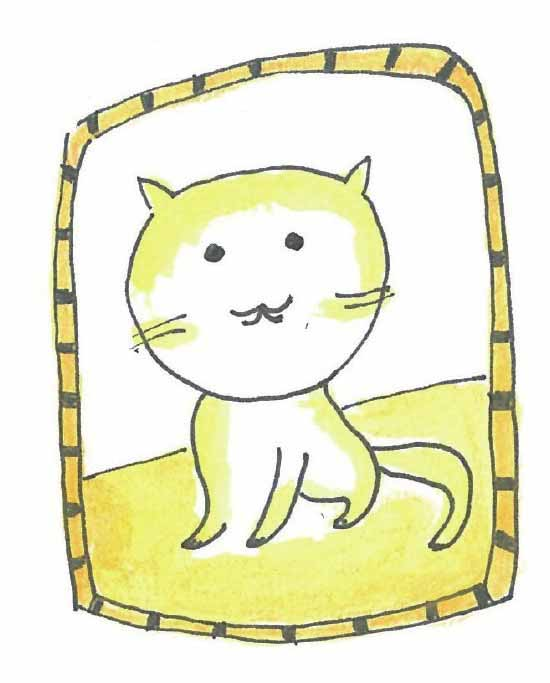

转眼小文已经是大一的新生了，新的城市、新的校园既让人不安，又让人觉得兴奋，军训、社团、新课程、新朋友……每天的生活是那么忙乱。
这天小文收到妈妈发过来的一封邮件，下面是邮件的内容：
小文：
大学生活感觉怎样，在寝室就能看到大海，感觉一定很棒吧？
你推荐的几本书我看完了，太宰治的《御伽草纸》还不错，夏目漱石的《猫》一般，感觉写得太冗长啰嗦了。
村上春树的小说我实在是看不下去啊，但实话说他的这本《当我谈跑步时，我谈些什么》还是相当不错的，我喜欢。
下面这段话就是引用这本书里的：
“海明威好像也说过类似的话：持之以恒，不乱节奏，对于长期作业实在至为重要。一旦节奏得以设定，其余的问题便可迎刃而解。然而要让惯性的轮子以一定的速度准确无误地旋转起来，对待持之以恒，何等小心翼翼，都不为过。”
小文，大学校园不同于高中，课外活动貌似多如牛毛，再没有人扮演逼着你学的角色，诸如此类，搞不好就分不清主次。
请制定一些近期和长期的目标，然后让自己朝着目标“以一定的速度旋转起来”吧，如果你觉得坚持很难（有的时候把电脑打的字转化为实际的行动是有点难），那么想想村上的每天10公里跑步吧。
既然你这么喜欢村上的书，那这里再摘一段他的随笔？
“世上的人终其一生，都在寻求某个宝贵的东西，然而能找到的人不多，但是，我们必须继续寻求……”
小文，其实我也不清楚那个宝贵的东西是什么（有可能村上自己也不知道，嘿嘿），可以是房子车子，或者好的工作，也可以是爵士乐，好像也可以都不是。
我觉得我好像没有资格给你制定一个什么目标，但我还是希望你一直去寻求，就像康托尔寻求关于无穷的答案，哈密顿寻求四元数一样，不过在寻找的过程中，也希望你能像凯莱那样去热爱生活。
话题好像有点远了，最近学校的事情较忙，现在大学老师也越来越不好当了。
另外，还要告诉你一件事情，你走之后，丽仔不知什么原因喜欢上外出流浪了。这不，现在它还没回来。刚开始，我跟你爸爸还费心费力四处去找，现在也见怪不怪了。不过，我有点担心这只调皮的三脚猫会不会有一天不回来了。
暑假的“离散课程”你自己还在继续吗，离散的世界如此之大，其实我们只聊了一点皮毛呢。
如果你愿意，也许你寒假回来我们又可以继续“离散”的话题，哈哈。
就此停笔，附上丽仔近照一张，祝愉快！
